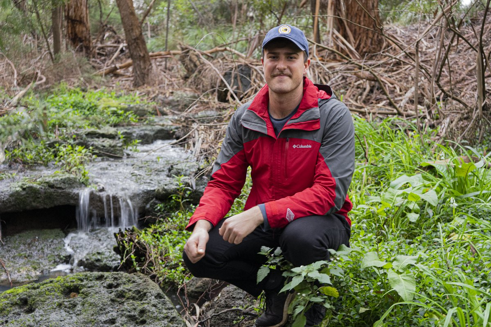
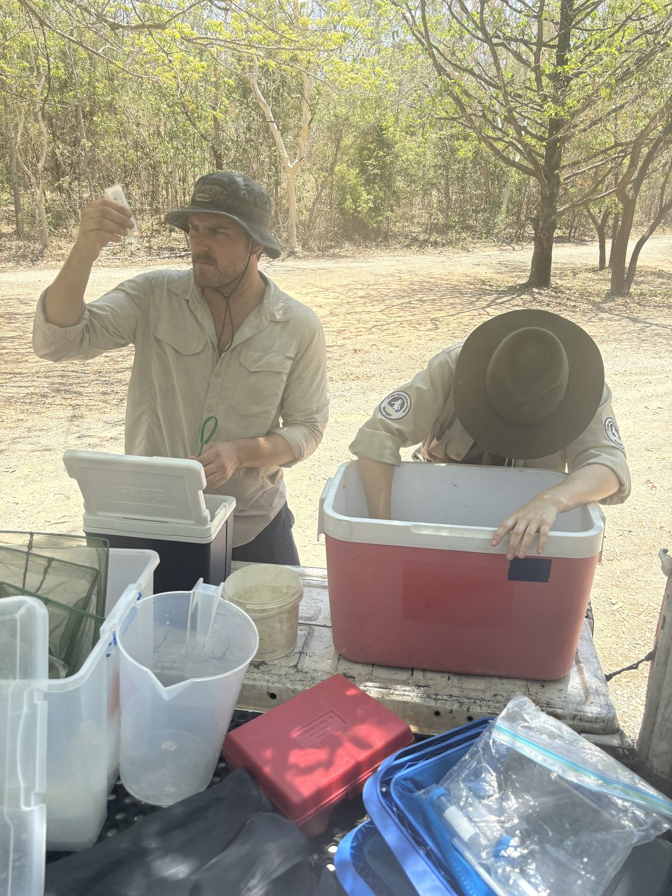
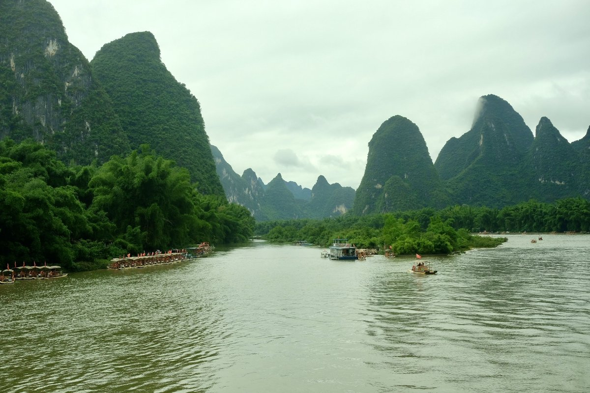
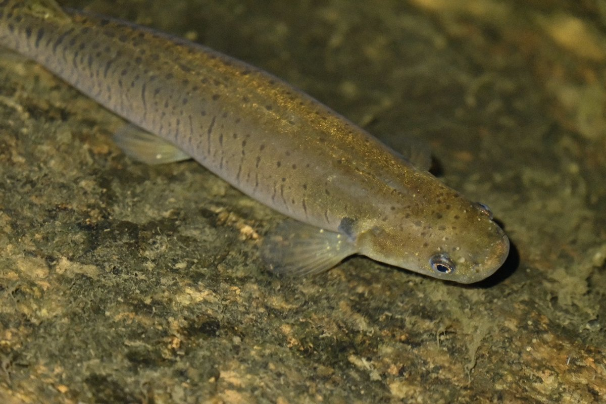
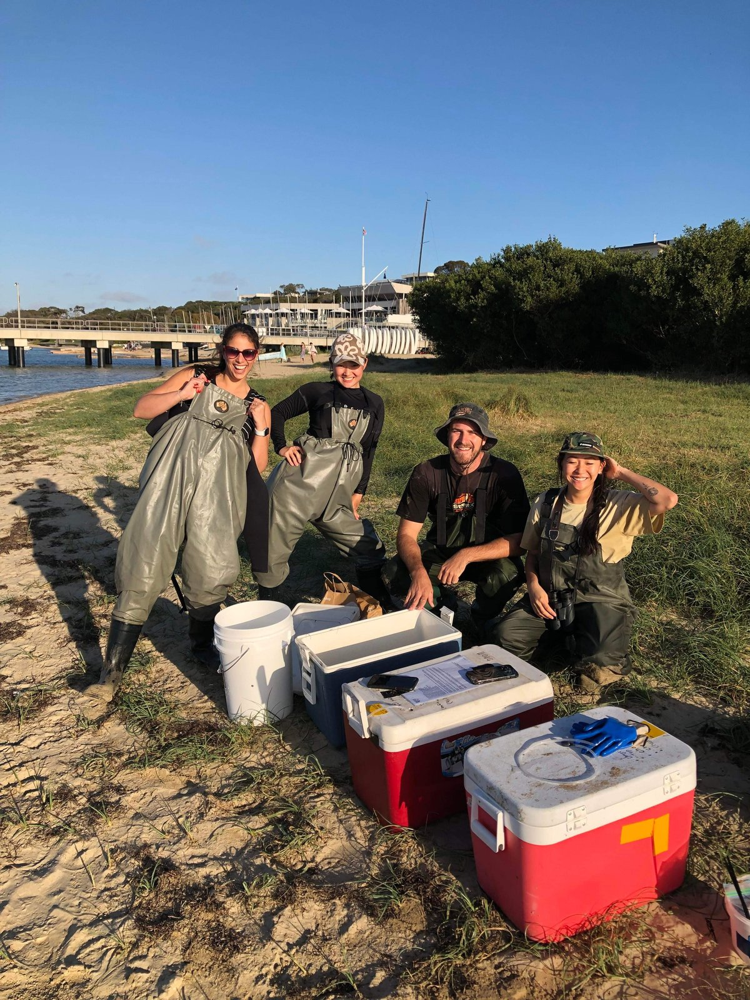
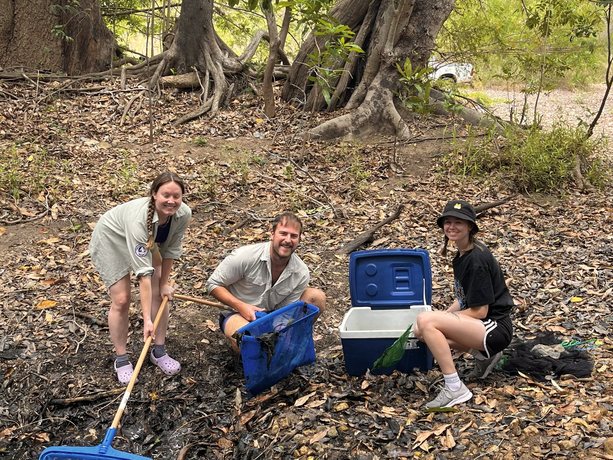

Behavioural Ecology & Ecotoxicology
PhD Candidate · Monash University · Melbourne, Australia
I study how anthropogenic disturbances—from pharmaceutical pollutants to noise—reshape the behaviour, cognition, and social dynamics of aquatic animals. My work bridges controlled experimental biology and transparent, reproducible data science.

Early-career researcher passionate about conservation and the natural world
I am an early-career researcher in behavioural ecology and ecotoxicology at Monash University, where I am completing my PhD under the supervision of Prof. Bob Wong, Asst. Prof. Michael Bertram, and Dr. Jake Martin. My research sits at the intersection of animal behaviour, cognitive ecology, and environmental toxicology, asking how the chemicals we release into waterways alter the way aquatic animals think, interact, and survive.
My PhD investigates whether common psychoactive pharmaceutical pollutants disrupt cognition, collective behaviour, and social information transfer in fish. Using the guppy (Poecilia reticulata) as a model, I combine behavioural assays, video tracking, and rigorous statistical analysis to reveal how contaminants detected in waterways worldwide may undermine processes critical for survival.
Prior to my PhD, my honours research demonstrated that different types of boat noise could differentially alter individual behaviours in a fish–shrimp mutualistic relationship. I am deeply committed to open science: I develop and maintain public analytical tools, including the R package cleanRfish, and I contribute to the scientific community as a Data Editor for Proceedings of the Royal Society B.
I am motivated by a desire to generate research that informs conservation policy, particularly around the regulation of emerging contaminants in aquatic ecosystems. I thrive in collaborative, close-knit teams and thoroughly enjoy communicating science to diverse audiences.
Behavioural ecology, ecotoxicology, pharmaceutical pollution, collective behaviour, cognition, social information transfer, aquatic conservation
School of Biological Sciences
Monash University
Melbourne, Australia
R, Python, GitHub, EthoVision, idtracker.ai, video tracking, experimental design, open science
Contributing to the scientific community
Proceedings of the Royal Society B
Ensuring data integrity and reproducibility for one of the world's leading biological journals.
Teaching Associate at Monash University for BIO3052 (Animal Behaviour) and BMS1021 (Cells, Tissues, and Organisms), 2023–2026, and ENS5010 (Global Challenges and Sustainability, Master of Environment and Sustainability), 2026.
School of Biological Sciences Sustainability Representative, Monash University, 2024–2026. Postgraduate Committee Representative, 2023.
Monash University
The impact of psychoactive pharmaceutical pollutants on cognition and social behaviour in fish
Monash University
Effects of boat noise on risk perception and communication in a fish–shrimp mutualism
Monash University
Zoology Major · Biomedicine Major · Chemistry Minor
School of Biological Sciences, Monash University ($750 AUD)
Ecological Society of Australia — 2 rounds ($8,500 AUD each)
Swedish University of Agricultural Sciences (85,000 SEK, ~$12,700 AUD)
Faculty of Science, Monash University ($2,000 AUD)
Australian Evolution Society
International Society for Behavioural Ecology (ISBE)
Society of Environmental Toxicology and Chemistry (SETAC Australasia)
Australian Society for the Study of Animal Behaviour (ASSAB)
“Fish on Drugs” — interviewed on 3CR’s marine & coastal program about how pharmaceutical pollutants affect the way fish think.
“Att droga fisken” [Drugging the fish] — Manera, Brand, Amcoff & Bertram, Qvintensen (2), 12–15.
Invited talk on pharmaceutical pollution and its effects on the behaviour of fish.




